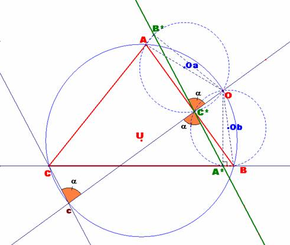
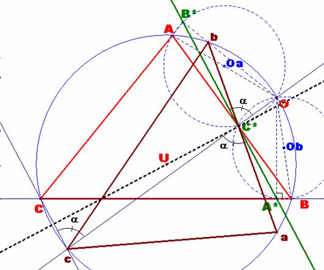

Problema 276
Para el aula.
Circunferencias
y tangencias.
O es un punto sobre la
circunferencia circunscrita al triángulo ABC.
Demostrar que si las perpendiculares desde O a los lados AB, AC y BC cortan a
la circunferencia en los puntos c, b y a, el triángulo abc es igual en todos
los aspectos al ABC.
[Nota del director: tienen los mismos lados y ángulos, aunque el orden es
diferente]
a)Estudiar a qué transformaciones se
somete ABC para transformarse en el abc, de manera que se solapen exactamente
[añadido por el director].
Aref, M.N., Wernick,W. (1968):
Problems &Solutions in Euclidean Geometry. Dover Publications, Inc,
New York. (pag. 97)
Solución
de F. Damián Aranda Ballesteros, profesor del IES Blas Infante de Córdoba,
España.
a) Para el punto O dado,
construimos su recta de Simson. Procederemos, pues, desde el punto O a trazar
perpendiculares a los lados del triángulo ABC, obteniendo los puntos A*, B* y
C*. La recta de Simson será la que contiene a estos puntos. Será la recta
coloreada en verde de la fig.1.
|
 |
|
Figura 1 |
Tal como se indica en el enunciado, construimos los puntos a, b y c.
Consideramos ahora uno de ellos, sea el punto c.
Probaremos que las rectas Cc y la de Simson son paralelas. Para ello vemos que
los ángulos que determinan con la transversal Oc son iguales.
Vemos esto con mayor detalle:
ÐOcC = a,
ángulo inscrito en la circunferencia de centro U y que abarca el arco
ÐCBO = a
por ser también un ángulo inscrito en la misma circunferencia y que abarca el
mismo arco .
Pero el ángulo ÐCBO = a, es también un ángulo inscrito en la circunferencia
de centro Ob y de diámetro OB. Por tanto en el triángulo rectángulo
OA*B, el ángulo ÐA*OB = p/2 −a . Pero ahora tenemos que ÐA*OB = ÐA*C*B =p/2 −a, ya que ambos ángulos están inscritos en la misma
circunferencia y abarcan el mismo arco . Como las rectas AB y
Oc son perpendiculares, entonces ÐcC*A* ==p/2 −(p/2 −a) = a .
De esta manera, la mediatriz de la cuerda Cc pasará por el centro U de
la circunferencia y será perpendicular a
De igual modo podíamos haber probado que las mediatrices de las cuerdas
Bb y Aa pasan por el centro U de la circunferencia y ambas serán igualmente perpendiculares
a
Como quiera que el eje de simetría es un diámetro, resultará que el
triángulo abc será semejante al inicial ABC pero con distinta orientación. Ver fig.2.
|
 |
|
Figura 2 |
b) Si ahora repetimos para el
triángulo abc la misma transformación respecto al mismo punto O, obtendremos un
nuevo triángulo a’b’c’ que tendrá la misma orientación que le inicial ABC y por
tanto mediante un giro centrado en el punto U podemos hacer que se solapen ABC
y el nuevo triángulo girado a’’b’’c’’.